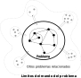
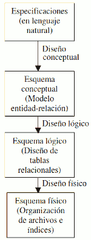

La interpretació dels fenòmens que ocorren en la naturalesa és una activitat natural de l'ésser humà. Per a això l'ésser humà s'ha basat en la seua capacitat d'abstracció.
Abstracció: capacitat mitjançant la qual som capaces de simplificar el procés d'interpretació, simplificant o reduint el nombre de paràmetres i relacions existents en el fenomen natural que es desitja interpretar.
Al conjunt de les propietats que caracteritzen un fenomen se'l denomina dades, i al conjunt de valors que aquestes propietats poden presentar se'ls denomina informació.
Així tenim que un model és la representació abstracta d'un determinat fenomen natural.
La mesura de valors corresponents a les dades es realitzarà mitjançant un conjunt de tipus de dades (enter, real, booleà, cadena de caràcters, etc) els quals poden prendre un conjunt de valors predefinit per endavant (domini).
Exemples:
| Dada | Domini |
| Nomb | Conjunt de caràcters de l'alfabet amb una longitud màxima de 100 caràcters. Pot incloure espais. |
| Edat | Nombres enters compresos entre 0 i 200. |
| Data de naixement | Conjunt de dates vàlides per al calendari occidental. |
| Pes | Nombres reals positius amb 3 decimals. |
| Salari | Nombres reals positius amb 2 decimals. |
D'aquesta manera, una dada vindrà definit pel nom de la pròpia dada i la seua informació en un moment determinat en el món real. Així, la dada "pes" d'una persona, vindrà determinat pel nom de la dada i la informació del seu valor en kg en un moment concret: "pes: 67". La informació ha de ser emmagatzemada de manera que permeta la seua comunicació.
Un Model de Dades és una unitat d'abstracció mitjançant la qual pot descriure's un fenomen real o abstracte. En ell es descriuen les propietats que caracteritzen al fenomen, les relacions entre aquestes propietats i com les propietats i les relacions poden evolucionar amb el temps.
El primer pas en la representació d'un fenomen del món real és la determinació dels límits del fenomen, és a dir, quines dades són els que intervenen i com poden ser mesurats.
De manera general, la representació d'un problema requereix el seguiment dels següents passos:
-
Definició del problema: mitjançant una descripció simple i concreta on es detalla la funció o objectiu que el sistema desitja aconseguir. Interessa descriure com el sistema es comporta a grans trets, fent èmfasi en les relacions amb l'exterior.
-
Definició de l'arquitectura del problema: mitjançant una descripció de les "parts" importants del sistema i com interactuen entre elles.
-
Definició de l'estructura del problema: mitjançant la descripció dels elements del sistema. Es determinen quins objectes, entitats, dades o variables són les que formen part del problema en estudi. Per a cadascun d'aquests objectes es determina:
-
La definició de l'objecte: descripció de la funció que exerceix l'objecte dins del problema en estudi.
-
La mesura de l'objecte: descripció dels valors que poden ser mesurats o pot prendre l'objecte.
-
Les relacions entre objectes: descripció de les interdependències o qualsevol altre tipus de relacions entre objectes.
-
La definició de les restriccions inherents als objectes: descripció de quins valors poden ser mesurats per a cadascun dels objectes sobre la base de les relacions que mantenen amb la resta d'objectes del sistema. Així, un sofà pot ser de molts colors, però si és de la col·lecció primavera_2024 només podrà ser "verda" o "taronja".
-
Definició de la dinàmica: descripció de l'evolució que el problema tindrà o té amb el temps.
-
-
Estudi del comportament del model proposat: on s'analitzarà l'adequació del sistema proposat als objectius desitjats.

Els Models de Dades permeten la representació del problema a tres nivells d'abstracció:
- Nivell conceptual: es representen els tipus o classes d'objectes i les seues relacions . Es descriu cadascun dels tipus d'objectes especificant les seues propietats i domini en el qual poden ser mesures, així com les restriccions en els valors que poden presentar-se. El nivell conceptual és independent de les eines i mecanismes que es vagen a utilitzar per a la representació i tractament. Sol utilitzar-se alguna variant del model entitat-relació per a les bases de dades relacionals.
- Nivell lògic: es parteix del resultat del disseny conceptual, que es transforma de manera que s'adapte a la tecnologia que s'ha d'emprar. Es representa el problema sota les limitacions imposades per la representació i el tractament de la informació que es vaja a realitzar. Així, el tractament manual o automàtic imposa unes restriccions; el suport on s'emmagatzema la informació imposa altres restriccions, el maquinari utilitzat imposa altres restriccions, etc. En el model relacional s'usen les taules.
- Nivell físic: en aquesta etapa es transforma l'estructura obtinguda en l'etapa del disseny lògic, amb l'objectiu d'aconseguir una major eficiència; a més, es completa amb aspectes d'implementació física que dependran del SGBD. El sistema es representa en la forma en què és vist pel sistema de representació i tractament utilitzat. S'utilitzen SGBD concrets.
| Nivell de descripció | Estructura | Comportament |
| Model Conceptual | Descripció dels objectes del món real, dels seus atributs o propietats i de les relacions entre objectes. | Descripció del comportament dels objectes. Les accions, operacions i processos que aquests objectes realitzen sobre altres objectes, així com les que són realitzades sobre els objectes del sistema. |
|
Model Lògic |
Descripció dels objectes lògics, identificant els atributs pels quals aquests poden ser identificats, així com les relacions existents entre els objectes | Descripció de les tasques que s'han de realitzar per a representar el comportament dels objectes. Aquestes tasques s'agruparan en fases i procediments. |
| Model Físic Model procedimental |
Descripció dels objectes físics. Les estructures i relacions dels objectes és representada de manera adequada per al seu posterior emmagatzematge, recuperació i tractament. | Descripció de les accions elementals que s'han de realitzar per a representar el comportament dels objectes. Aquestes accions són representades sota les limitacions del llenguatge que es vaja a utilitzar per a la seua implementació en programes d'ordinador. |